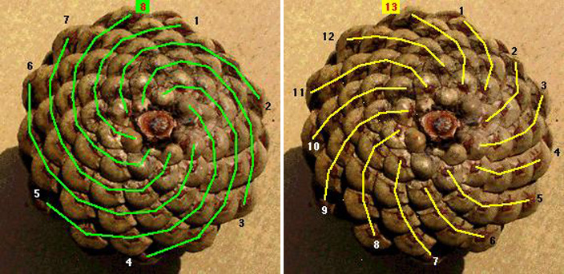

Fibonacci Numbers (\(\varphi\))
Look at a pinecone from the bottom. How many spirals go in the clockwise direction (green lines in the photo)? How many spirals go in the counter-clockwise direction (yellow lines)? Wouldn’t you expect that they would be the same?

The number of spirals found on pine cones are almost always Fibonacci numbers, which appear in the Fibonacci sequence:
\(0, 1, 1, 2, 3, 5, 8, 13, 21, 34, 55, 89, 144, \ldots\)
Note that, in the Fibonacci sequence, the next number is found by adding the two previous ones.
Why Fibonacci numbers appear?
Here’s a completely different place they turn up: the family tree of a honeybee.
Honeybees are haplodiploid. A fertilised egg develops into a female – a worker or a queen – with two parents: a mother and a father. An unfertilised egg develops into a male drone, with only one parent: his mother. Drones have no father at all.
Follow a single drone’s family tree back through the generations using that one rule, and count how many ancestors he has at each generation. The counts turn out to be exactly the Fibonacci sequence – no coincidence, and no approximation: it’s forced by the branching rule itself.